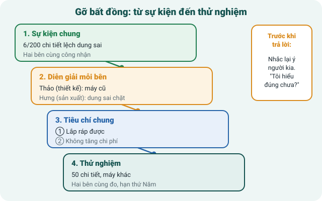

K8 · Làm việc nhóm và tôn trọng khác biệt › Bậc 4 Thành thạo
Nghe phản biện và gỡ bất đồng chuyên môn trong nhóm
Bài này làm Tờ 4: Phiếu gỡ bất đồng. Mẫu in. Bài nối tiếp Phối hợp với đồng nghiệp (Bậc 3).
1. Mục tiêu
- Nhắc lại quan điểm phản biện của người khác đến mức họ xác nhận đúng ý.
- Dẫn hai đồng nghiệp đang bất đồng qua 4 bước: sự kiện, diễn giải, tiêu chí chung, thử nghiệm.
2. Khởi động truy xuất
- Lập trường khác lợi ích thế nào? Cho một ví dụ.
- Đề xuất một trang kết thúc bằng phần gì?
Đáp án
- Lập trường là điều người ta đòi. Lợi ích là lý do đằng sau. Ví dụ: "không đổi ca" và "sợ không kịp đón con".
- Đề nghị cụ thể: ai quyết gì, trước ngày nào.
Xem lại: Thuyết phục không cần chức danh.
3. Giải thích
Bất đồng chuyên môn là điều tốt. Nó giúp nhóm thấy rủi ro sớm. Vấn đề chỉ đến khi bất đồng biến thành chuyện cá nhân.
Nghe phản biện. Khi bị phản đối, ta hay nghĩ cách cãi lại ngay. Hãy làm ngược lại. Nhắc lại ý người kia bằng lời của bạn. Hỏi: "Tôi hiểu như vậy đúng chưa?" Chỉ phản hồi khi họ nói "đúng rồi".
Việc này không có nghĩa là bạn đồng ý. Nó chứng tỏ bạn đã hiểu. Người được hiểu thường bớt căng và chịu nghe lại bạn.
Bốn bước gỡ bất đồng:
- Sự kiện. Hai bên cùng thấy điều gì? Chỉ ghi điều kiểm được: số liệu, email, kết quả đo.
- Diễn giải. Mỗi bên hiểu sự kiện đó thế nào? Bất đồng thường nằm ở đây, không nằm ở sự kiện.
- Tiêu chí chung. Cả hai muốn đạt điều gì? Ví dụ: an toàn, đúng hạn, chi phí. Xếp thứ tự ưu tiên.
- Thử nghiệm hoặc chuyển lên. Nếu vẫn khác ý, thử nhỏ để có dữ liệu. Nếu không thử được, đưa người có quyền quyết, kèm hai phương án.

Khi bạn là người hòa giải. Gặp riêng từng người trước. Trong buổi chung, giữ đúng thứ tự 4 bước. Không phán ai đúng ai sai. Ghi kết quả vào Tờ 4 và gửi cả hai.
Tờ 4. Phiếu gỡ bất đồng
- Sự kiện chungSố liệu, tài liệu hai bên cùng công nhận.
- Diễn giải của mỗi bênĐã được bên kia nhắc lại đúng.
- Tiêu chí chungXếp thứ tự ưu tiên.
- Thử gì hoặc ai quyếtHạn, cách đo kết quả.
Có lúc bất đồng chạm tới an toàn hay quy định pháp luật. Khi đó, không thương lượng. Báo ngay người có trách nhiệm.
4. Ví dụ tại nơi làm việc Việt Nam
Tình huống giả định. Anh Phong là kỹ sư cơ khí cấp cao ở một nhà máy linh kiện tại Bắc Ninh. Hai đồng nghiệp, Thảo bên thiết kế và Hưng bên sản xuất, cãi nhau ba tuần về một chi tiết hay bị lệch.
Trưởng phòng nhờ anh Phong gỡ. Anh gặp riêng từng người, rồi mời cả hai họp 30 phút.
Sự kiện: cả hai đồng ý: 6 trên 200 chi tiết tuần trước lệch dung sai. Diễn giải: Thảo cho rằng máy cũ. Hưng cho rằng dung sai đặt quá chặt. Anh Phong yêu cầu mỗi người nhắc lại ý người kia. Hưng nhắc sai lần đầu, Thảo sửa. Lần hai, Thảo gật đầu.
Tiêu chí chung: chi tiết lắp ráp được, không tăng chi phí. Lắp ráp là ưu tiên một.
Thử nghiệm: chạy 50 chi tiết trên máy mới hơn ở xưởng bên. Thảo và Hưng cùng đo. Hạn: thứ Năm.
Kết quả: máy mới vẫn lệch 2 chi tiết. Hai bên cùng đề xuất nới dung sai ở một kích thước không ảnh hưởng lắp ráp.
Vì sao cách này tốt: anh Phong không phán xử. Hai bên cùng có dữ liệu. Nhắc lại ý nhau làm cuộc họp bớt căng.
5. Thực hành
Tình huống giả định. Bạn là chuyên viên marketing cấp cao ở một công ty mỹ phẩm tại TP.HCM. Hai đồng nghiệp bất đồng. Ngân muốn dồn ngân sách quý tới cho video ngắn. Khoa muốn giữ quảng cáo tìm kiếm. Tháng trước, video ngắn có nhiều lượt xem. Quảng cáo tìm kiếm có nhiều đơn hàng hơn.
Điền 4 bước của Tờ 4. Viết câu bạn dùng để yêu cầu mỗi người nhắc lại ý người kia.
Gợi ý 1
"Nhiều lượt xem" và "nhiều đơn hàng" là sự kiện. "Kênh nào tốt hơn" là diễn giải.
Gợi ý 2
Tiêu chí chung của quý tới là gì: nhận biết thương hiệu hay doanh thu? Ai quyết điều đó?
Lời giải mẫu
- Sự kiện: tháng trước video ngắn có nhiều lượt xem, quảng cáo tìm kiếm có nhiều đơn hơn.
- Diễn giải: Ngân cho rằng lượt xem sẽ thành đơn sau vài tháng. Khoa cho rằng chỉ đơn hàng mới là kết quả.
- Câu yêu cầu: "Trước khi trả lời, Khoa nhắc lại giúp lý do của Ngân. Ngân xem Khoa hiểu đúng chưa."
- Tiêu chí chung: hỏi trưởng phòng mục tiêu quý tới. Giả sử là doanh thu, kèm tăng khách mới.
- Thử nghiệm: chia 70% tìm kiếm, 30% video có mã giảm giá riêng. Sau 6 tuần, so đơn hàng từ mỗi kênh.
(Số liệu là giả định.)
6. Tự kiểm tra
Chọn đáp án. Mỗi lựa chọn đều có giải thích.
Câu 1. Đồng nghiệp phản biện kế hoạch của bạn trong họp. Câu nào là bước đầu tốt nhất?
-
Chưa đúng. Cãi ngay làm người kia thấy không được nghe, và họ sẽ phản đối mạnh hơn.
-
Đúng. Đúng. Nhắc lại ý và hỏi xác nhận cho thấy bạn đã hiểu, rồi mới phản hồi.
-
Chưa đúng. Hoãn mà không hẹn lại khiến phản biện bị bỏ qua, rủi ro vẫn còn.
Câu 2. Câu nào là sự kiện, không phải diễn giải?
-
Chưa đúng. Đây là nhận xét. Hai người có thể hiểu khác nhau.
-
Đúng. Đúng. Đây là điều đếm được, hai bên có thể cùng kiểm.
-
Chưa đúng. Đây là suy đoán về thái độ, không kiểm được trực tiếp.
Câu 3. Hai bên vẫn khác ý sau khi thống nhất tiêu chí. Thử nghiệm không làm được. Bạn nên làm gì?
-
Chưa đúng. Bạn không có quyền quyết. Làm vậy biến bạn thành một bên của bất đồng.
-
Đúng. Đúng. Người quyết có đủ thông tin, hai bên thấy quá trình công bằng.
-
Chưa đúng. Bất đồng kéo dài làm chậm việc và dễ thành chuyện cá nhân.
Câu 4. Bất đồng giữa hai tổ liên quan đến việc tháo che chắn an toàn của máy để chạy nhanh hơn. Cách nào đúng?
-
Chưa đúng. An toàn không phải chuyện thỏa hiệp. Nhường một ít vẫn có thể gây tai nạn.
-
Chưa đúng. Thử nghiệm không được tạo ra rủi ro an toàn cho người lao động.
-
Đúng. Đúng. Vấn đề an toàn và quy định phải chuyển lên ngay, không hòa giải.
7. Phản tư
- Lần gần nhất bị phản biện, bạn trả lời ngay hay nhắc lại ý người kia trước?
- Bất đồng nào ở nhóm bạn thật ra là khác nhau về tiêu chí ưu tiên?
8. Áp dụng thật
Trong 7 ngày tới, khi có người phản đối ý bạn, hãy nhắc lại ý họ trước khi trả lời. Ghi vào nhật ký: bạn nhắc lại mấy lần thì họ gật đầu.
9. Siêu dữ liệu
| skill | K8 · Làm việc nhóm và tôn trọng khác biệt |
|---|---|
| level | Bậc 4 · Thành thạo |
| group | N4 |
| framework_map | CSfW: 2b Connect and work with others; 2c Recognise and utilise diverse perspectives; SkillsFuture CCS: Collaboration; Communication; NACE: Teamwork; Communication; WEF: Empathy and active listening; LifeComp: S1 Empathy; S3 Collaboration (chỉ dẫn chiếu) |
| updated | 2026-11-14 |
Hoàn thành bài
Đánh dấu đã học để site gợi ý lịch ôn sau 1, 3 và 7 ngày. Dữ liệu chỉ lưu trên máy của bạn.
Lịch ôn gợi ý: